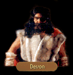

|
|
|  |
[UNPOPULATED]
[REPOPULATED] |
|
|
| UNPOPULATED - FIRST | UNPOPULATED - SECOND |
|
Locklear motioned to the figure across the room. The man walked over to join them. He stood before them, eyebrows arched inquisitively. DEVON: What can I do for you to day? LOCKLEAR: I do believe this is the loneliest tavern I've ever visited. Where is everyone? DEVON: Everyone is elsewhere. With the exception of Rake, myself and a handful of boarders that have wandered in from off the road, there's not been another soul in town since the Festival. LOCKLEAR: Everyone? Why? What happened here? DEVON: Come the eighth hour of last evening, a cloaked gentlemen entered through that same door there and took a seat. He ordered a joint of beef, a loaf of bread and a mug of ale. I remembered these things because I had ordered the same. Soon as he had finished his meal he went to the tavernkeeper and tossed down fifty golden sovereigns, turned round and was gone by the door. Before the first of those coins stopped their spinning on the counter, the rest of the people in the tavern rushed out after him. The keeper didn't even latch the door... LOCKLEAR: Some sort of deal? DEVON: Nope. Some sort of damn local ritual. It seems I arrived in the middle of a ceremony that was called the Festival of the Stranger. Traditionally the elders of the town would gather in the tavern and draw lots and the one with the longest lot was dubbed The Stranger. On the first night of the festival, The Stranger comes around and offers the members of the town fake sovereigns - they called them nimptos - and then the citizens of the town leave to sleep in the fields. Of course, I wasn't aware of what was going on. LOCKLEAR: And they're supposed to stay in the fields? DEVON: Ah, no, no, no. The next morning, the elected Stranger is to circle the village three times while swinging a strand of hemp over his head. When he is done, he cuts the length of rope and sets it on the road to let the people know that they can come back. They then know that Killian is looking with good fortune on their township and that she won't strike their fields dead. If the strand is not placed, however, it means that she is displeased and any citizen that attempts to return to town will be struck dead. LOCKLEAR: Was the Stranger killed by Killian? DEVON: No, not Killian, but by a man named the Collector to whom he owed money who didn't know about the town's tradition. It didn't matter to the citizens of Eggley, though. They still chose to see it as a sign from Killian and they haven't returned since, think the place is cursed and won't return until the curse is lifted. They've relocated in Tanneurs, Hawk's Hollow, and a few in Malac's Cross. They all believe they've done the right thing and have given me permission to do whatever I wanted here. Out of respect for them, I've decided to keep the old town name of Eggley. LOCKLEAR: I don't know. It seems people would have to be pretty thick to believe all of that. DEVON: Would they? Would you have the nerve to spit on a shrine of Ishap? LOCKLEAR: No...but...I guess I can see your point. DEVON: Everyone has their beliefs. Many people in these villages at one time were farmers, and it is difficult for them to simply turn their backs on the goddess of nature. They require her blessing before they can go on to new lives. You should remember that before you judge something to be ignorant. So - as my new job as bartender of this tavern, I suppose it's my duty to see if you need anything? Can I set you up?
|
Devon spat. Evidently less than pleased with the hand of solitaire pokiir that he'd dealt himself, he drummed his fingers on his leg. DEVON: Back for another night of Devon's hospitality, eh? Come on in. I need someone to cheat at pokiir! What can I do for you?
|
| GOODBYE (UNPOPULATED) |
|
LOCKLEAR: Thank you for your hospitality, Devon. It was a pleasant respite from travelling the roads. DEVON: Remember that next time you talk to someone about Eggley. Time to start some new rumors. LOCKLEAR: That we will. Goodbye, Devon.
|

| REPOPULATED - FIRST | REPOPULATED - SECOND |
|
Locklear motioned to the figure across the room. The man walked over to join them. He stood before them, eyebrows arched inquisitively. DEVON: Come in and join the celebration! Welcome to The Stranger! LOCKLEAR: What are you celebrating? DEVON: A new life here in Eggley! You remember I told you that on the night I arrived something very peculiar happened? All the town's people disappeared, vanished without a trace. When they didn't come back, I decided to stay here and see what happened, maybe take over the tavern... Damn me if they didn't all decide to come back! LOCKLEAR: That's good news, isn't it? DEVON: All taken, I think so, though I don't know what the ultimate fate of my tending this tavern will be. Still haven't heard what's become of the tavern keeper, but while I am still here, I suppose I ought to act like one. What can I get you?
|
Devon spat. Evidently less than pleased with the hand of solitaire pokiir that he'd dealt himself, he glanced up at his new found patrons who were milling in the door. Seeing Locklear, he gave a halfhearted grin. DEVON: I'm not sure if I like this town any better now that the people are coming back. Now it's all I can do to find a minute to think. Price I guess you pay for your dreams. What can I get for you?
|
| GOODBYE (REPOPULATED) | GOODBYE (REPOPULATED) |
|
LOCKLEAR:
Congratulations on Eggley's rebirth, Devon. I hope everything works out here so you can hold on
to the tavern. DEVON: One way or the other, it's been fun, so I have no regrets however it turns out. LOCKLEAR: That's good to hear. So long, barkeep!
|
LOCKLEAR:
We'll be off now I think. Things to do. Want us to keep spreading the word about Eggley? DEVON: I think we have quite enough people at the moment. I'll be glad when we finally reach a level somewhere between a ghost town and a city. LOCKLEAR: I'm sure you'll get your wish someday, Devon. Thanks once again.
|

CHAPTER 1
| FESTIVAL |
LOCKLEAR: Which god did you say this Festival of the Stranger was in celebration of?DEVON: The fertility goddess - Bringer of Harvests, The Earth Mother, Silban. Pick a name. All mean the same thing. She's the wench to whom ma and pa ugly pray to have little runt ugly and enough wheat to eat through the winter. Can't say I have much use for her.
LOCKLEAR: Is there a temple of hers nearby, or...
DEVON: Straight west of Eggley, then north at the crossroads. Big white building with the columns, smells like a whore's bedchamber. Hard to miss.
| MOREDHEL |
LOCKLEAR: Someone we ran into up the road told us they had seen a moredhel near here. I don't suppose you've seen him have you?DEVON: Him? I've seen enough moredhel to start a barrel ball city league. Whole clump of them came by here a few weeks ago heading south in packs of twos and threes down the road towards Tanneurs.
LOCKLEAR: Were they armed?
DEVON: Like the war god Tith's own legions. Looked like they might be out to sign up as caravan guards, but who would hire them?
LOCKLEAR: Did you get a look at any of them?
DEVON: None of them came close enough to the Stranger that I could get a good look at them. Now that I think of it, it's kind of peculiar. On the off occasions when moredhel will crash through a town, they'll usually kick up some kind of ruckus with the locals to prove who's the toughest kid on the block. These just marched through town like they were in a parade review, like they were expecting someone to watch them come through.
| BUILDINGS |
LOCKLEAR: With a whole town to yourself, I'm surprised you haven't opened up any of the other shops or houses.DEVON: I'm leaving them be until I know what's eventually going to happen here. Never know when some folk is going to show up and want his property back. I don't want to be the idiot holding the bag. If most of the folks were smart, they probably locked their houses and I'm not much of a lockpick.
LOCKLEAR: Know anyone who is?
DEVON: Strange character named Abuk. I ran across him when I was working for the Dauphiness Cassandra of Queg. We discovered him once when we boarded a Keshian vessel. After he helped open a few choice chests of mercantile, we chained him up in the belly of the ship so we could make a present of him to Cassandra. But when we docked in Palanque, all we found in the hold of the ship was a note saying he could be found in Silden if ever we needed his services. I've never hired anyone else for a lockpicking job since.
| POKIIR (if Isaac) |
LOCKLEAR: Now I think of it, a man we know told us he lost at pokiir to a Devon here in Eggley. Would you be he?DEVON: Depends on why you're asking, now doesn't it? If you're interested in playing a hand or two, then I might say I'm the same man. If, however, your friend decided to send round a few bravos to collect what I rightfully won from him...
LOCKLEAR: What's yours is yours as far as I'm concerned. I was just wondering how good a player you were. Isaac said that you had an unusual talent for it.
DEVON: Isaac? Isaac said I had an unusual talent for it? Now if that's not the pot calling the kettle black, I've never heard it at all. While we we're playing, it was as if that scuff knew every thought I had in my head. Every time he would fold he'd just look over at his elven friends with a big smile.
LOCKLEAR: Elven friends? Like Thorgath here?
DEVON: They could have been brothers by the look of them. Yeah, he looked kinda like your friend, but he damn sure wasn't an elf. He was wearing the clothes of one of Delekhan's moss-troopers. Moredhel. No doubt about it.
| A GAME (if Isaac) |
LOCKLEAR: I'm more familiar with pashawa, but I've played pokiir a few times with men from the Shamata garrison. You play by special rules?DEVON: Straight game. Mercy's rules, full deck, nothing wild. Only special rule I have is you cheat, I ventilate your liver. Simple as that. Interested in playing?
| YES (enough) | YES (not enough) | NO |
|
GAMBLER DIALOGUE
|
LOCKLEAR:
Ah, wait... I wouldn't want to you to call me a cheat. I just realized I haven't any gold. DEVON: The blade dangling at your side looks sturdy. I could put up my own sword and we could play blade for blade.
|
LOCKLEAR:
Not today. It's nothing personal you understand, I just don't feel Banath's with me at the
moment. DEVON: I've had runs of luck like that. Once I was riding high while I was working for the Dauphiness of Palanque, won fifteen straight games of lin-lan in a tavern against this miserable old seadog, but he refused to give up. Middle of the sixteenth game, he pulls out a diamond half the size of my fist and says he wants to bet it. I tell him I don't have enough money to match a bet like that, but he suggests I put up the purse I'm carrying for the Dauphiness. LOCKLEAR: How did he find out about it? DEVON: Let's say the liquor told him... So, I put up the purse. He pulls out a Blue Lady, a Red Knight, two Yellow Squires and a King's Jester. Lost the whole lot to him. The Dauphiness was less than pleased. I had to work for that witch as a bodyguard for two years to pay off what I lost in that purse.
|
| SELF DEFENSE (if Isaac) |
LOCKLEAR: If you were a Dauphiness' bodyguard, you must be a superb swordsman. Perhaps you could teach us a thing or two?DEVON: I have my tricks. You don't stay alive as long as I do without picking something up here and there. I might be able to give you a few pointers if you're willing to pay. Eighty sovereigns a session. Interested?
| YES (enough) | YES (not enough) | NO |
|
Devon waved towards the door. Seizing a pitted Salamanca from under the bar's counter, he
followed them into the open yard before The Stranger Tavern, then passed them up to lead the way
across a grassy field. Slowly the ground inclined, giving way to a rocky hillface and a tumble of
ancient, mold-eaten gravestones. "Eggley's graveyard?" Locklear halted behind the stocky mercenary. "I don't understand." "Knowing how to defend yourself isn't just knowing how to hold a sword. It also has to do with where you put your feet!" Twisting a half-turn, Devon swept his blade at Locklear's face, forcing his unsuspecting pupil to stumble backwards over a half-buried stele. Lurching forward, the mercenary pressed the point of his blade to Locklear' s neck. "Congratulations," Devon growled. "You're dead." After five hours of ripostes, dodges and very near misses, Devon motioned for his pupil to drop his guard. "That's enough for now. It's time to eat. We can talk while I make something."
|
LOCKLEAR:
Apparently I've mistaken the jangle in my head for the coins in my purse. I'm afraid I'll have
to turn down your offer after all. DEVON: That's all right. I don't think I'll forget my riposte before I meet you again.
|
LOCKLEAR:
Beyond our means at the moment. Perhaps another time. DEVON: Anytime you like.
|
| MERCENARIES (if Marc) |
OWYN: One of the brothers from the Abbey at Sarth has seen several mercenaries on the move through the principality, and he said they looked Quegian. With a good Quegian name like Devonius, I was thinking you might know something about them.DEVON: I haven't had anything to do with the Dauphiness of Queg or her bastard father-in-law for over three years now. I burned my Writs of Passage the day Spitzer and I boarded the Dauphiness' war galley, the Storm's Master, and sunk King Lebeus' flagship with all hands on board. Since that day, I've only worked for me. Me.
OWYN: Then you have no idea why there would be so many mercenaries wandering free in the Kingdom?
DEVON: You don't get more than three Quegian mercenaries together in one spot unless you're paying them to be together. Small little island like that, most of them have killed a member of another mercenary's family. Pay them well, they'll put their personal vendettas aside long enough to do what's asked of them before they start on one another. Whoever's funding them must have an incredible fortune in rubies somewhere.
OWYN: Rubies?
DEVON: Isles sovereigns won't buy you a thing in Queg except a month underground in King Lebeus' pain pens. Rubies. That's all they'll take.
| SPITZER (if Marc) |
OWYN: You mentioned someone named Spitzer who boarded the Storm's Master with you. Was he a friend of yours? Is he still around?DEVON: You know, to be passing through you ask a lot of questions.
OWYN: Just curious. I was wondering if maybe he would know anything about the Quegians.
DEVON: He's got more reason to be afraid of King Lebus than I do. He'd avoid Quegians like the plague. Now if you want to play dice with him, I'm sure he be plenty happy to talk to you. He was in Tanneurs last I heard.
CHAPTER 3
| NEWS |
JAMES: Anything of interest happening around here?DEVON: Seems business around here is picking up. We already got our first new full time resident and he's as mad as old King Rodric.
JAMES: Really? Why do you say that?
DEVON: I discovered him out in the graveyard clawing up a grave. He'd already broken into one of the coffins, but I guess the body had already decomposed because there wasn't anything inside the box. After I got him cleaned up, I took him to one of the houses and I put him in bed. I'll need to check in on him later. If you'd like to pay him a visit, he's in the last house on the right before you leave town heading North.
CHAPTER 6
| STELLAN (if Marc) |
OWYN: We're looking for a tax collector who went by the name of Stellan. Have any idea where he went to after the festival?DEVON: Third headstone on the right and six feet under, that's where you'll find Stellan. That's the gentleman that was killed by the Collector. Why are you trying to find him?
OWYN: He had an old document I wanted to look at...
DEVON: It might still be locked up in his office here in town. Be a matter of finding his key, of course.
| THE FEVER (if Marc) |
OWYN: The brothers at Sarth told us the Quegian Fever is hitting the coastal areas of the principality hard. You're from Queg. Is there anything we can do about the fever?DEVON: For them, nothing. For yourselves, keep off the main roads. When a lot of people get the fever, they run off from wherever they are in a blind panic and they imagine anyone and everyone around them as a threat. Stay away from the roads and you should be able to avoid running into them.